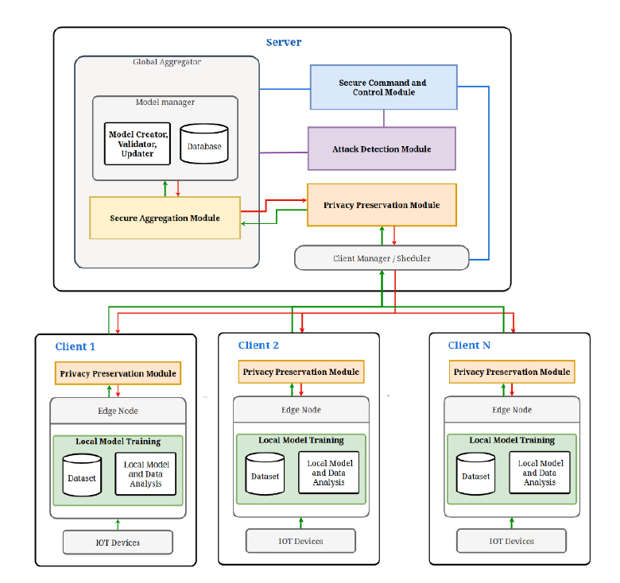

Learn more about our research and progress.
Visit DocumentationArchitecture
Why is Data Privacy in Federated Learning Important?
Federated Learning frameworks enhance data privacy by processing data locally. This reduces the risk of sensitive data exposure.
Core Components
Attack Detection & Resilience
Mitigate model poisoning and Byzantine attacks using anomaly detection techniques. This component ensures the integrity of the federated learning system by identifying abnormal updates and preventing malicious contributions.
Privacy Preservation
Implement techniques like differential privacy, homomorphic encryption, and regular privacy audits to protect user data and prevent privacy breaches during model training and communication.
Secure Aggregation
Utilize Shamir’s Secret Sharing and threshold cryptography to securely aggregate model updates from multiple clients. This ensures that no individual client’s data is exposed during the aggregation process.
Secure C2 Communication
Establish secure communication channels between clients and the server using TLS 1.3, HMAC, and mutual authentication. This ensures that data transmission is secure and resistant to eavesdropping and tampering.
Get Started with the Framework
Follow these simple steps to integrate our privacy-preserving FL system into your workflow.
Industries Benefiting from This Framework

Automobile
Enhances real-time data processing securely across vehicle nodes.

Healthcare
Protects sensitive patient data during model training.

Finance
Prevents leakage of financial trends in federated systems.

Energy
Enables Energy saving Machine learing training without centralized storage risks.
Why Use This Framework?
Provide Feedback
We'd love to hear your thoughts!